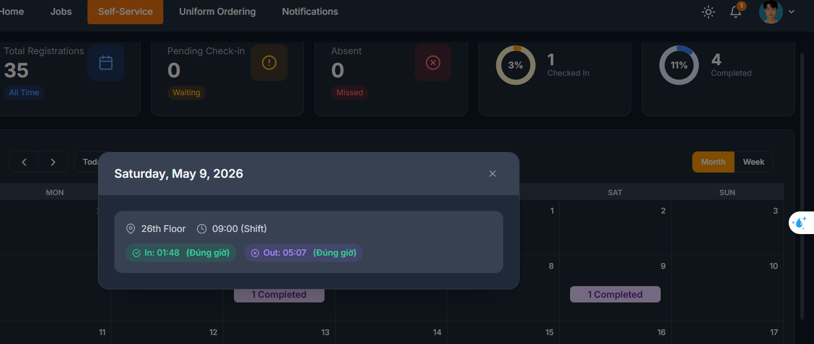
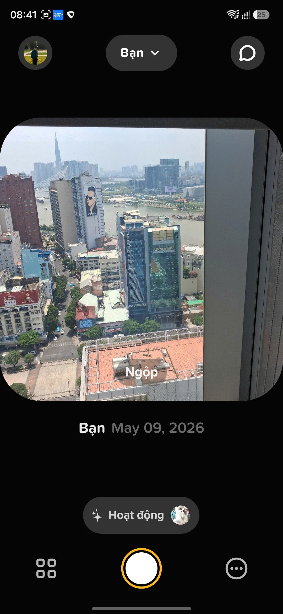

Sự kiện 1
Nội dung sự kiện
Community Day gồm hai phần chia sẻ chính từ các thành viên cấp cao trong cộng đồng FCAJ:
Phần 1 – Phương pháp học hiệu quả (Diễn giả: A Long)
A Long chia sẻ các mẹo thực tế để xây dựng và duy trì thói quen học tập hiệu quả:
- Tạo chuỗi học tập: Thiết lập một chuỗi học tập hàng ngày nhất quán và cam kết không để đứt gãy.
- Giữ sự tập trung: Chủ động tránh các yếu tố gây xao nhãng như game và mạng xã hội trong thời gian học.
- Hệ thống phần thưởng: Tự thưởng cho bản thân sau khi hoàn thành chuỗi hoặc kết thúc một buổi học để củng cố thói quen.
Phần 2 – Kỹ thuật Prompt AI & Demo Proptimizer (Diễn giả: A Thịnh)
A Thịnh trình bày demo về Proptimizer — một tiện ích mở rộng trình duyệt giúp tối ưu hóa prompt và cho phép người dùng trò chuyện với AI ở bất kỳ đâu trên web. Buổi chia sẻ bao gồm các chủ đề sau:
Các thành phần của một Prompt tốt
| Thành phần |
Mô tả |
| Role (Vai trò) |
AI đóng vai trò là ai |
| Instruction (Chỉ dẫn) |
AI cần làm gì |
| Context (Bối cảnh) |
Thông tin nền tảng liên quan |
| Input Data (Dữ liệu đầu vào) |
Văn bản cần phân tích / xử lý |
| Output Format (Định dạng đầu ra) |
Cấu trúc, cú pháp, phong cách |
| Examples (Ví dụ mẫu) |
Các ví dụ minh họa few-shot |
| Constraints (Ràng buộc) |
Hướng dẫn như “KHÔNG được…”, trọng tâm, giới hạn độ dài |
Ví dụ Prompt
[Role] Huấn luyện viên nghề nghiệp cho sinh viên mới ra trường
[Task] Cải thiện phần tự giới thiệu thực tập
[Context] DevOps Engineer có kinh nghiệm AWS, backend, và quản lý dự án
[Input] "Xin chào, tên tôi là Thịnh..."
[Example] "Tôi thích lập trình và làm việc nhóm."
→ "Tôi đam mê lập trình và phối hợp tốt với đồng nghiệp để giải quyết vấn đề."
[Output] Phiên bản cải thiện + giải thích ngắn
[Constraints] Dưới 80 từ, đơn giản, tự nhiên, rõ ràng, tự tin
Các phương pháp tối ưu Prompt LLM
- Rõ ràng & Cụ thể
- Sử dụng ngôn ngữ chỉ dẫn trực tiếp
- Dùng dấu phân cách để tách các phần
- Mô tả những gì NÊN làm, không phải KHÔNG nên làm
- Không yêu cầu LLM tính toán
- Cho phép trả lời “Tôi không biết”
- Chia đầu vào dài thành các phần nhỏ hơn
Kinh tế Token: Chi phí sử dụng AI
- Token = Đơn vị từ con (không phải lúc nào cũng là từ đầy đủ)
- LLM đọc và tạo văn bản theo đơn vị token
- Số lượng token khác nhau tùy theo ngôn ngữ
- Ví dụ mô hình – Claude Opus 4.6:
- Token đầu vào: $5.00 / 1 triệu token
- Token đầu ra: $25.00 / 1 triệu token
Các kỹ thuật Prompt nâng cao
- Chain-of-Thought (CoT) — suy luận từng bước
- Self-Consistency — nhiều đường suy luận, chọn kết quả nhất quán nhất
- Tree-of-Thoughts (ToT) — khám phá ý tưởng theo nhánh
- Retrieval-Augmented Generation (RAG) — kết hợp truy xuất với sinh nội dung
- Role Prompting — gán nhân vật cho mô hình
Kiến trúc Proptimizer
Tiện ích mở rộng được xây dựng trên nền tảng AWS serverless:
- Amazon Cognito để xác thực người dùng (Đăng ký / Đăng nhập)
- CloudFront + S3 để phân phối nội dung tĩnh
- API Gateway + Lambda để xử lý logic phía backend, bảo vệ bởi Cognito Authorizer
- Amazon Bedrock để suy luận LLM
- DynamoDB để lưu trữ dữ liệu
- CloudWatch để ghi log và theo dõi metrics
Bài học rút ra & Đóng góp cá nhân
- Kỷ luật học tập quan trọng: Duy trì chuỗi học tập nhất quán và giảm thiểu xao nhãng là yếu tố then chốt để ghi nhớ kiến thức lâu dài.
- Prompt engineering là một kỹ năng: Hiểu cấu trúc prompt (Role, Task, Context, Constraints) giúp cải thiện đáng kể chất lượng đầu ra của AI.
- Nhận thức chi phí: Hiểu cách hoạt động của token và chi phí giúp đưa ra quyết định tiết kiệm khi xây dựng sản phẩm AI.
- Kiến trúc AI serverless: Demo Proptimizer minh họa một kiến trúc serverless thực tế sử dụng Cognito, API Gateway, Lambda, Bedrock, và DynamoDB — mô hình có thể áp dụng trực tiếp cho dự án SaaS HR.
Em xin lỗi vì em chỉ note anh Long và anh Thịnh nhưng đã quên note các anh chị ở đoạn sau của sự kiện ạ
Hình ảnh sự kiện

